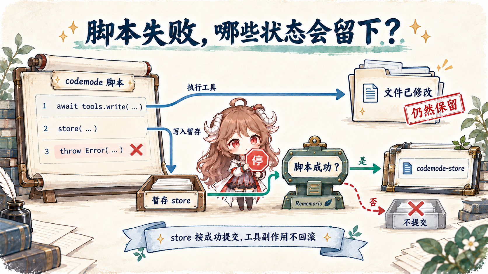

阅读契约：跟随一次“读取三份测试报告，只返回失败用例”的任务，解释脚本在哪里执行、工具怎样被发现、哪些结果进入模型，以及脚本失败后哪些状态仍然留下。Pi 的运行循环与会话基础见 总览；已经进入历史的长日志如何缩短，见 上下文专题。
本文依据 Pi 1.0.0 的公开实现。Codemode、tool search 和 MCP 在 0.99 已进入内置扩展，1.0 又调整了工具说明、后台连接与模型调用能力。这里讨论 v1.0.0 的稳定 CLI 路径；SDK 需要显式装配相应扩展。文中示例用于解释数据流，不代表测得的延迟、费用或任务成功率。
一、让脚本先读报告，模型只看需要判断的部分
假设测试生成三份 JSON 报告。每份都有几百条通过记录，只有少量失败。模型可以逐个调用 read，再从长输出里找失败；但这个任务的大部分工作只是解析 JSON、过滤数组和合并字段。把这些中间数据全部放进对话，会消耗模型输入，也会增加遗漏关键错误的机会。
Codemode 让模型先写一段 JavaScript。脚本读取报告、筛选结果，再显式输出小摘要。模型仍决定该做什么、怎样解释失败；机械的数据处理交给脚本完成。工具调用照常产生真实效果，只是原始返回值先到脚本，而不是自动成为下一轮模型消息。
const paths = ["reports/unit.json", "reports/api.json", "reports/ui.json"];
const reports = await Promise.all(paths.map(async (path) => {
const raw = await tools.read({ path });
const report = JSON.parse(raw);
return {
path,
failed: report.tests
.filter((test) => test.status === "failed")
.map(({ name, error }) => ({ name, error })),
};
}));
text(reports);这个例子假定报告结构为 tests 数组，且文件足够小，read 返回可直接解析的完整 JSON。它没有创造一个绕过工具限制的文件接口；如果 read 返回截断提示、文件不存在或格式不符，脚本仍会失败。三次读取可以并发发出，但宿主的工具调度策略仍会影响实际执行顺序。
输入给 codemode 的是原始 JavaScript 源码，运行时把它当作异步函数体执行，因而可使用顶层 await。text()、image() 和顶层 return 决定模型最终收到什么；只计算出一个局部变量不会自动把它加入输出。具体接口见 Codemode 文档。
二、工具很多时，先发现，再决定怎样调用
把读取报告换成查询测试平台，数据可能来自 MCP 服务。一个服务可以提供几十甚至几百个工具。若每次请求都附上所有参数说明，即使任务只用两个查询接口，也要反复携带整本手册。Pi 因此把“知道有这个服务”和“拿到某个工具的调用声明”分开。
默认 MCP 工具使用 codemode exposure：模型先看到服务简介，脚本再搜索工具并读取声明。另一个入口 tool_search 会把匹配工具加载为后续请求里的直接工具。二者解决的是说明何时进入上下文；发现本身不执行查询，也不代表获得了额外权限。
const matches = await searchTools("failed test runs", { namespace: "mcp__tests" });
text(matches);
if (matches[0]) text(await describeTool(matches[0].name));这里的 tests 是假设的服务名，示例只发现并查看说明。拿到真实声明以后，模型才能在后续脚本里填入正确参数。不要根据自然语言描述猜工具名或参数。脚本也可以读取 ALL_TOOLS，或用 describeNamespace 获取某个服务的简介、指令和工具名。
| exposure | 初始请求与后续访问 | 适合的使用方式 |
|---|---|---|
| codemode（默认） | 不直接声明，也不塞进 codemode 内联说明；脚本按需发现。 | 组合调用、过滤较大结果。 |
| deferred | tool_search 加载后，在下一次请求直接声明；脚本也可调用。 | 先找工具，再让模型直接调用。 |
| direct | 模型直接收到工具声明；也能从脚本调用。 | 小而常用的工具集合。 |
| hidden | 保持注册，但不可调用。 | 明确关闭的服务或工具。 |
MCP 文档 还规定了按工具覆盖：精确名称优先于通配规则，通配规则按第一个匹配项决定。服务器的暴露方式不必一刀切。被 tool_search 加载的声明写入会话，沿当前分支保留；脚本访问间接工具则不依赖当下已声明的工具列表。这样，恢复会话或切换分支后，工具可用性与声明历史都有明确的来源。
2.1 后台连接为什么不应该不断改写旧请求
Pi 在会话启动时后台连接 MCP 服务。第一次提示只为有 direct 工具的服务等待最多 10 秒，因为这些声明需要进入这次请求。其他服务等到实际发现或调用时再等待：脚本明确命名某个 MCP 服务时等待对应服务；搜索全部工具、读取 ALL_TOOLS 或使用 tool_search 时则等待全部服务。
默认间接工具不进入 codemode 的工具说明，因此新服务连上来不会让这份说明不断变长。服务简介发生变化时，Pi 在提示开始时把新 mcp_servers 内容追加进对话。这样能减少对较早内容的改写；缓存是否命中仍由实际请求、provider 规则和缓存寿命决定，不能从“追加”直接推出命中率。
2.2 内置扩展的默认值与 SDK 的装配是两件事
CLI 的 MCP 扩展会在 codemode 服务连接后自动启用 codemode，deferred 服务则启用 tool_search；不使用 MCP 时也可在 defaultTools 中加入 +codemode。codemode.mode: "on" 保留已声明工具，"only" 才把它们从直接声明移到脚本入口。SDK 文档 明确说明 SDK 会话不自动加载内置扩展，需要通过资源加载器加入对应工厂。不能把 CLI 的自动装配当成底层 Agent 默认行为。
三、脚本通过同一条工具执行路径影响外部世界
模型生成的脚本在独立 QuickJS worker 中运行。每次调用建立新的 VM；没有 Node API、文件系统、网络或定时器，脚本访问外部世界要通过 tools 或 models。这个安排限制了脚本直接操作宿主的能力，也让宿主能明确记录它请求了哪些操作。
在 coding-agent 中，tools 调用经由 ctx.executeTool() 进入 AgentSession 的嵌套工具执行。参数验证、执行前后的扩展处理与普通工具调用使用同一条路径；子调用携带 parentToolCallId，可以关联到外层 codemode。脚本只是增加一个调用组织层，没有把工具变成不受宿主管理的函数。
模型发出 codemode 调用
→ QuickJS 执行 JavaScript
→ tools.<name>(args) 请求宿主
→ 验证参数 / 扩展 tool_call / 工具执行 / 扩展 tool_result
← 转成脚本可用的返回值
→ text() / image() / return 选择输出
← codemode 结果进入后续模型上下文需要区分 VM 和工具的权限。脚本自己没有文件系统，但它调用的 write 仍然会写文件；脚本没有网络 API，但 MCP 工具仍可能访问远端服务。安全文档 说明 Pi 默认没有逐次审批或内置沙箱。权限扩展可以拦截调用，实际隔离则取决于宿主和工具环境。MCP 的 readOnlyHint、destructiveHint 等是服务声明的提示，不能自动证明操作安全。
execute.ts 会把嵌套调用的摘要附到外层结果，方便界面展示和后续检查。这些记录有大小限制，也不等于完整保存所有工具原文。若需要保留测试报告、变更证据或审计记录，应让工具把必要原始数据写入明确的文件或存储，不能假设脚本筛掉的内容总能从对话恢复。
四、少返回数据以前，先分清三类失败
回到测试报告：只把失败列表返回给模型看起来很自然，但“脚本没有抛异常”并不意味着所有测试通过。不同工具有不同的结果约定，调用方需要先判断操作是否成功，才能过滤业务内容。
| 脚本调用 | 返回形状 | 必须检查什么 |
|---|---|---|
| read / edit / write | 文本输出。 | 调用拒绝、截断提示和业务格式。 |
| bash | 带 output、exit_code、truncated 等字段的结构化对象。 | 非零退出码也可以正常返回；先看 exit_code。 |
| MCP 工具 | 完整 CallToolResult，包含 content、structuredContent、isError。 | isError 为真时也可正常 resolve；不能只看 Promise 状态。 |
这三个层次要分别处理：JavaScript 抛错属于脚本失败；工具返回非零退出码或 isError 属于操作失败；测试报告中的 failed 则是业务结果。若把它们全部压成“无失败条目”，模型可能把一次查询故障误判为测试通过。
const results = await Promise.allSettled([
tools.bash({ command: "npm test -- --runInBand" }),
tools.read({ path: "reports/previous.json" }),
]);
text(results.map((result, index) => {
if (result.status === "rejected") {
return { index, error: String(result.reason) };
}
return { index, value: result.value };
}));示例用 allSettled 保留独立调用的成功和失败，随后仍需解释 bash 的退出码。依赖前一步输出的操作应顺序执行；会写同一个文件或远端对象的操作也不能仅因为能并行就放进 Promise.all。并发省的是独立等待时间，不会替调用者保证业务顺序。
大输出也有两道不同限制。直接展示的 MCP 文本超过 20 KB 时会截去中间并保存完整临时文件；codemode 能先拿到完整 MCP 结果再过滤。脚本自身的最终输出默认限制为 10,000 个估算 token，超出后保留头尾并提供完整文本文件。bash 在脚本里也有自己的 1 MiB 输出上限。VM 只有 256 MB 内存，“先给脚本处理”仍需要控制数据量，不能无限累积完整返回值。
五、脚本失败后，哪些状态会留下
假设脚本先把修复建议写入文件，再用 store 保存本次报告的游标，最后解析另一份报告时抛错。读者最容易误以为这是一笔原子事务：脚本失败，所以前面的写入都取消。Pi 并没有给工具副作用提供这样的回滚。

store(key, value) 暂存小型 JSON 值，load(key) 读取脚本当前的小状态：初始值来自当前分支之前的成功写入，同一脚本里的 store 也会立即更新可读值。executeCodemode 仅在脚本成功后追加 codemode-store custom entry；恢复会话时沿分支从根重放这些写入。失败脚本不会提交它本轮的 store 修改，但会保留此前已输出的部分内容，并报告脚本错误。
这适合保留游标、ID 或摘要。单个值最多 262,144 个 JSON 字符，总量最多 1,048,576 个字符，不能拿来存图像数据。换分支后只看到该路径上的值；外部文件和远端系统却不会跟着会话树自动回到旧版本。需要跨系统一致性时，仍要设计幂等操作、显式检查点或补偿步骤。
脚本结束时，未等待的 Promise 会丢弃，还在执行的工具调用会收到取消信号。若启动写操作后立即 return，不能把“脚本已结束”当成“写入已确认”。需要的结果必须 await；取消是否及时生效取决于工具自身，已经完成的副作用不会因此消失。
六、分类与图像模型把哪些工作带进脚本
同一条数据处理路径也可调用非聊天模型。例如，把失败反馈交给分类器标注类别，或根据筛选后的结果生成一张图。脚本通过 models 查询目录并使用会话凭据运行 classifier 与 image 模型；聊天模型虽然可列出，但不能从脚本运行。因此这不是默认启动另一个能自由对话的子 Agent。
模型调用约定 要求检查 stopReason 和 errorMessage：provider 错误会作为结果返回，不一定抛异常。同一脚本最多同时运行四个分类或图像调用，额外请求排队；用量计入 codemode 结果和会话费用。图像必须用 image(block) 输出，打印 base64 文本只会制造巨大且不可读的上下文。
分类器提供的是模型判断。若它决定哪些失败会被隐藏、哪些报告可以归档，就需要保留未确认项并验证误分类，而不能把结构化字段当作可靠性证明。Codemode 改变了中间工作在哪里完成；判断是否正确，仍需任务自己的验证标准。
七、什么时候值得把一组调用放进脚本
| 任务形状 | 优先选择 | 需要保留的性质 |
|---|---|---|
| 单次调用，结果很短 | 直接工具调用。 | 让错误和结果清楚可见。 |
| 多份独立报告，需要过滤或合并 | codemode 组织读取和确定性处理。 | 每份数据的成功／失败状态与来源。 |
| 工具数量很多，调用方式暂不确定 | 先发现工具，再选择直接调用或脚本。 | 真实参数声明和当前可用性。 |
| 历史已经很长，后续不需要原文 | 会话 ContextEdit 或 compaction。 | 原始记录、分支语义和恢复一致性。 |
| 涉及多个外部写入 | 按依赖顺序执行，设计幂等与检查点。 | 不能用脚本成功标志替代副作用核对。 |
要评价这套设计是否有收益，可以对同一批报告比较两种执行路径：最终答案是否一致，遗漏了多少失败，发给模型的输入和输出各有多少，完整等待时间是多少，工具失败能否被正确解释，恢复后游标是否仍然对应已完成的工作。脚本把长结果缩短只是第一步；缩短后仍能做对事情，才值得保留这次改造。
与前一篇连起来看，Pi 给出了两个不同的处理时机：Codemode 在工具结果进入模型之前筛选，ContextEdit 在历史已经写入之后改变未来输入。二者都把“保留什么证据”和“给模型看什么”变成显式决定，也都要求单独核对已经发生的外部效果。